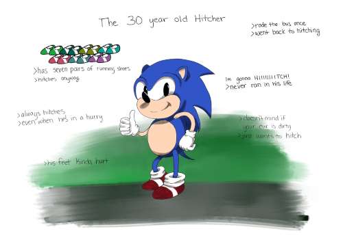
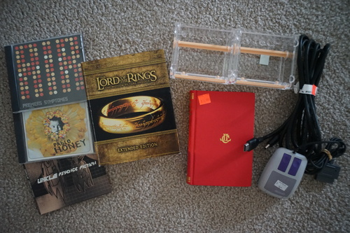

Wow!! It's been a whole year since my last full doll arrived! Shout out to my little Praline for always being so cute and spunky!

I illegally downloaded via torrent a Wacom Cintiq 16. It's huge though!! It takes up almost my entire desk! For everyone interested, the proprietary 3-in-1 cable is 72 inches long. WHY IS THIS NOT IN THE SPECS???? It's really not long enough for me either. I have serious rearranging to do to make this work. I already increased my desk space by lifting my monitors and it's still not enough! Maybe male to female HDMI and USB cables would help so I could put it on another desk.

Do you remember my first (and only) tablet?? I got my medium sized blue Bamboo for my 15th birthday. The first thing I drew with it was.... this!
I couldn't just... not break in my new tablet by listening to Cascada and drawing Sonic the hitchhiker could I???
I'm using Krita now and it's honestly been better than I expected. It's NOT photoshop, but it is also not the unusable Green Is My Pepper. We'll likely never see PS on Linux, but I'm at the point where I will not consider returning to Windows.
WAY too mellow for me